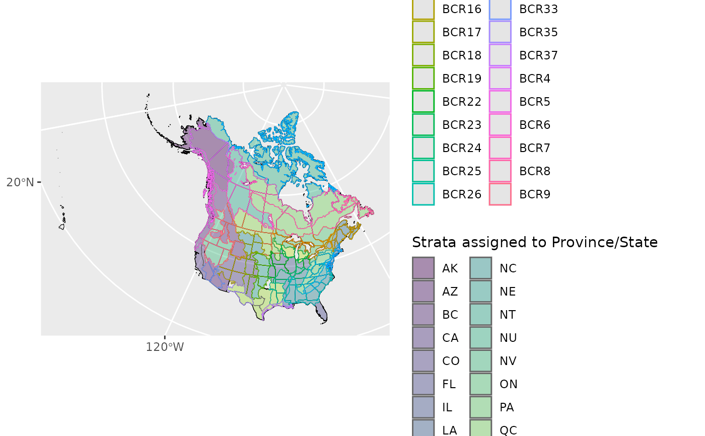

Categorizes custom stratification polygons by province or state if possible.
This can be useful for calculating regional indices (generate_indices()) or
trends (generate_trends()) on a custom stratification, or if you want to
create a geofaceted plot (plot_geofacet()).
Arguments
- strata_map
sf data frame. Strata polygons to be categorized.
- min_overlap
Numeric. The minimum proportion of overlap between a stratum polygon and a Province or State. Overlap below this proportion will raise warnings.
- plot
Logical. Whether to plot how polygons were assigned to Provinces or States
- keep_spatial
Logical. Whether the output should be a spatial data frame or not.
See also
Other helper functions:
load_map(),
search_species()
Examples
# Demonstration of why we can't divide BCR by Provinces and States!
map <- load_map("bcr")
assign_prov_state(map, plot = TRUE)
#> The legacy packages maptools, rgdal, and rgeos, underpinning the sp package,
#> which was just loaded, will retire in October 2023.
#> Please refer to R-spatial evolution reports for details, especially
#> https://r-spatial.org/r/2023/05/15/evolution4.html.
#> It may be desirable to make the sf package available;
#> package maintainers should consider adding sf to Suggests:.
#> The sp package is now running under evolution status 2
#> (status 2 uses the sf package in place of rgdal)
#> Warning: 28 strata are assigned to a province or state based on less than the minimum specified overlap

#> Simple feature collection with 223 features and 7 fields
#> Geometry type: GEOMETRY
#> Dimension: XY
#> Bounding box: xmin: -4748423 ymin: -1638890 xmax: 2988370 ymax: 4517253
#> Projected CRS: North_America_Albers_Equal_Area_Conic
#> # A tibble: 223 × 8
#> strata_name prov_state country country_code province_state
#> * <chr> <chr> <chr> <chr> <chr>
#> 1 BCR10 BC United States of America US Washington
#> 2 BCR5 BC United States of America US Washington
#> 3 BCR9 NV United States of America US Washington
#> 4 BCR10 BC Canada CA British Columbia
#> 5 BCR4 AK Canada CA British Columbia
#> 6 BCR5 BC Canada CA British Columbia
#> 7 BCR6 NT Canada CA British Columbia
#> 8 BCR9 NV Canada CA British Columbia
#> 9 BCR10 BC United States of America US Idaho
#> 10 BCR16 CO United States of America US Idaho
#> # ℹ 213 more rows
#> # ℹ 3 more variables: geom <GEOMETRY [m]>, p_area <dbl>, note <chr>
# Use custom stratification, using sf map object
# e.g. with WBPHS stratum boundaries 2019
# available: https://ecos.fws.gov/ServCat/Reference/Profile/142628
if (FALSE) {
map <- sf::read_sf("../WBPHS_Stratum_Boundaries_2019") %>%
rename(strata_name = STRAT) # expects this column
s <- assign_prov_state(map, plot = TRUE)
# Some don't divide nicely, we could try a different min_overlap
s <- assign_prov_state(map, min_overlap = 0.6, plot = TRUE)
}